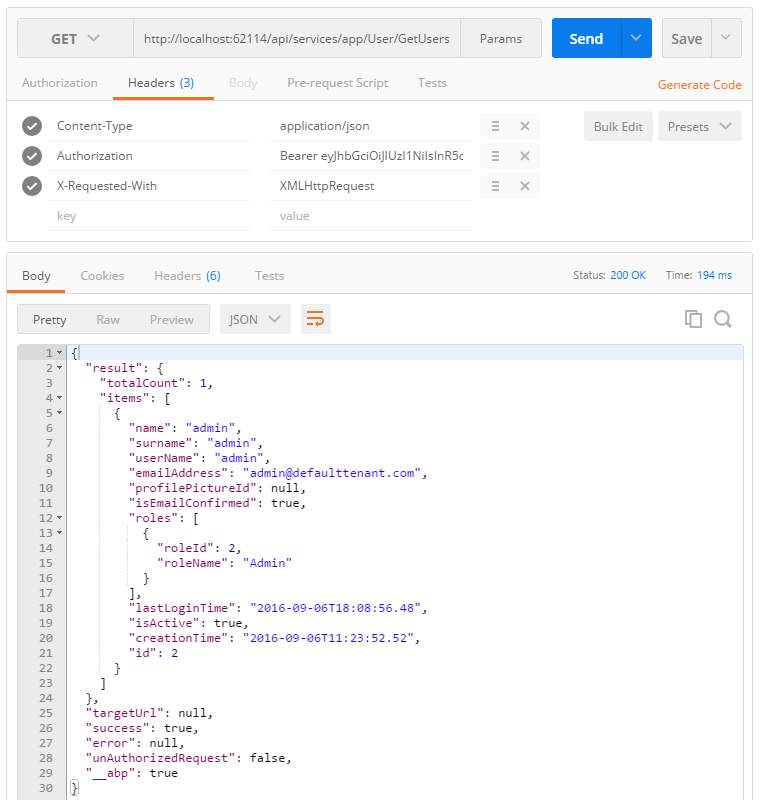

Introduction
The easiest way of starting a new project using ABP and module-zero for ASP.NET Core is to create a template on templates page. Remember to check "Include module zero".
After creating and downloading your project,
- Open your solution on Visual Studio 2017+.
- Select the 'Web.Mvc' project as startup project.
- Migrator.EF tool is used for adding/applying EntityFramework migrations. In order to create your database, open command prompt and move to root folder of EntityFramework project in your solution. Then run "dotnet ef database update" command."
- Run the application. User name is 'admin' and password is '123qwe' as default.
In this template, multi-tenancy is enabled by default. You can disable it in Core project's module class if you don't need.
If you have problems with running the application, please try close and open your Visual Studio again. It sometimes fail on first package restore.
Social Logins
Startup template supports Facebook, Twitter, Google+ and Microsoft logins. In the web.config, you can see the following settings in appsettings.json:
"Facebook": {
"IsEnabled": "false",
"AppId": "",
"AppSecret": ""
},
"Google": {
"IsEnabled": "false",
"ClientId": "",
"ClientSecret": ""
},
"Twitter": {
"IsEnabled": "false",
"ConsumerKey": "",
"ConsumerSecret": ""
},
"Microsoft": {
"IsEnabled": "false",
"ConsumerKey": "",
"ConsumerSecret": ""
}
Here, you can enable which you need. Surely, you must have application keys and passwords which you need to get from related social web site. You can find guides from web to learn how to obtain this keys. Once you enable a social login and enter true keys, you will see a button in the login page. You can implement other logins as similar.
Token Based Authentication
Startup template uses cookie based authentication for browsers. However, if you want to consume Web APIs or application services (those are exposed via dynamic web api) from a mobile application, you probably want a token based authentication mechanism. Startup template includes JwtBearer token authentication infrastructure.
Here, Postman (chrome extension) will be used to demonstrate requests and responses.
Authentication
Just send a POST request to http://localhost:62114/api/TokenAuth/Authenticate with Context-Type="application/json" header as shown below:

We sent values usernameOrEmailAddress and password. As seen above, result property of returning JSON contains the token and expire time (which is 24 hours by default and can be configured). We can save it and use for next requests.
About Multi Tenancy
API will work as host users by default. You can send
Abp.TenantId header value to work with a
specified tenant. It's an integer value and 1 for default tenant
by default.
Use API
After authenticate and get the token, we can use it to call any authorized action. All application services are available to be used remotely. For example, we can use the User service to get a list of users:

Just made a GET request to http://localhost:62114/api/services/app/user/GetUsers with Content-Type="application/json" and Authorization="Bearer your- auth-token ". Request body was just empty {}. Surely, request and response body will be different for different APIs.
Note that we also added X-Requested-With header to indicate that this is an AJAX request. Thus, ASP.NET Core can better handle the request and return appropriate return values on success and error cases.
Almost all operations available on UI are also available as API and can be consumed easily.
Migrator Console Application
Startup template includes a tool, Migrator.exe, to easily migrate your databases. You can run this application to create/migrate host and tenant databases.

This application gets host connection string from it's own appsettings.json file. It will be same in the appsettings.json in the .Web.Host project at the beggining. Be sure that the connection string in config file is the database you want. After getting host connection sring, it first creates the host database or apply migrations if it does already exists. Then it gets connection strings of tenant databases and runs migrations for those databases. It skips a tenant if it has not a dedicated database or it's database is already migrated for another tenant (for shared databases between multiple tenants).
You can use this tool on development or on product environment to migrate databases on deployment, instead of EntityFramework's own tooling (which requires some configuration and can work for single database/tenant in one run).
Unit Testing
Startup template includes test infrastructure setup and a few tests under the .Test project. You can check them and write similar tests easily. Actually, they are integration tests rather than unit tests since they tests your code with all ASP.NET Boilerplate infrastructure (including validation, authorization, unit of work...).